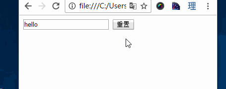

DOM
DOM节点
childNodes/childrenchildNodes:
标准模式下(IE9+)，获取直接子节点(包括文本节点，同时也会包含非法嵌套的子节点);
非标准模式下,获取直接子节点(只包括元素节点)。IE8包含非法嵌套的子节点；而IE7不包含123456789101112131415<ul id="nav"><li>1111</li><li>2222</li><li>3333</li><li>4444</li><!--<p>为非法嵌套--><p>5555</p></ul><script>window.onload = function(){var oUl = document.getElementById("nav");console.log(oUl.childNodes.length);//IE7下输出4，IE8输出5，其他标准浏览器输出11}</script>
children
获取直接子节点(仅包含元素节点)，仅在IE7及以下不包含非法嵌套子节点
相比之下，children兼容性较好，故较为常用
nodeType节点类型
常见节点类型: 元素节点类型(nodeType=1),属性节点类型(nodeType=2),文本节点类型(nodeType=3)
firstChild/lastChildnextSibling/previousSiblingfirstChild/firstElementChild:firstChild
标准模式下(IE9+):获取第一个子节点(包括文本节点)
非标准模式下(IE8及以下):获取第一个子节点(不包括文本节点)firstElementChild
获取第一个元素子节点，不支持IE8及以下
综上，若我们想获取oUl的第一个子节点,考虑到兼容性，如下:1var oFirst = oUl.firstElementChild || oUl.firstChild;但是存在一个问题，若oUl是空的，那么标准浏览器的oFirst值将会是
oUl.firstChild，即获取到了文本节点,这肯定不是我们想要的结果,所以还是用children[0]来获取吧。
其余用法及注意点同上。parentNode/offsetParentparentNode
获取当前元素的直接父节点;offsetParent
获取离当前元素最近的已定位父节点/祖先节点。注意:
标准浏览器中若没有定位父级，默认为body；
在IE7中，
若当前元素有定位，则offsetParent取到的元素将是html,否则仍是body;
若当前元素的某个父级触发了layout，那么当前元素的offsetParent就会指向该父级。参考文章:
IE layout详解
DOM元素位置尺寸
offsetLeft/offsetTop
若存在已定位父级:
IE7：- 若当前元素有定位，则
offsetLeft[Top]代表当前元素到已定位父级的距离 - 若当前元素无定位，则代表当前元素到
body的距离
其他浏览器:
offsetLeft[Top]代表当前元素到已定位父级的距离
若不存在已定位父级:offsetLeft[Top]代表当前元素到html的距离- 若当前元素有定位，则
元素尺寸
style.width样式宽，有单位clientWidth可视区宽(width+padding)，无单位offsetWidth占位宽(width+padding+border)，无单位1<div id="test"></div>1234567#test{height:100px;width:100px;padding:10px;margin:10px;border:1px solid red;}1234var oDiv = document.getElementById("test");console.log(oDiv.style.width);//100pxconsole.log(oDiv.clientWidth);//120console.log(oDiv.offsetWidth);//122getPos()
获取当前元素距离浏览器视口边缘的定位123456789function getPos(obj){var pos = {left:0,top:0};while(obj){pos.left += obj.offsetLeft;pos.left += obj.offsetTop;obj = obj.offsetParent;}return pos;}
操作元素属性
E.getAttribute(attr)获取指定元素指定属性值E.setAttribute(attr,val)设置指定元素指定属性值E.removeAttribute(attr)移除属性E.attr/E[attr]操作属性
以上两种方法区别在于:
前者可以操作自定义属性值，后者不能(IE7,8可以获取);
前者可以获取类似src等属性的实际值(IE7下仍然是绝对路径)，而后者会获取它的绝对路径1<img src="test.gif" id="test">123var oImg = document.getElementById("test")console.log("oImg.src");// "F://demo/test.gif"console.log("oImg.src");// "test.gif" IE7下仍为"F://demo/test.gif"
元素动态创建
document.createElement()appendChild()在父级的最后一个子节点之后追加子节点，参数为要添加的子节点insertBefore(新节点，已存在的被插入节点)在父级中的某个节点前追加子节点
注意:在IE下若第二个参数不存在，则会报错；而在其他浏览器下若第二个参数不存在，则会调用appendChild()来插入
兼容方法:12345if(oUl.children[0]{oUl.insertBefore(oLi,oUl.children[0]);}else{oUl.appendChild(oLi);}removeChild()删除子节点replaceChild(新节点，被替换节点)替换子节点
关于操作class的函数
getElementsByClassName()
addClass()
removeClass()
操作表格
JS提供了下列操作表格的几个属性:
tHead表格头tBodies表格正文tFoot表格尾row行cells列注意:
创建表格时，记得设置<tbody>，否则系统会自动添加，可能会造成不必要的麻烦
操作表单及表单事件
onchange事件
当内容发生改变时触发:<input type="text">:光标离开的时候若内容有变化则触发；<input type="radio">及<input type="checkbox">:标准下，只要内容有变化就触发；IE7,8下，光标离开的时候才触发
onsubmit事件
提交表单的时候触发。
以下示例模拟input框为空时不提交:1234<form id="form1" action="www.google.com"><input type="text" name="text"><input type="submit" value="提交" name="dosubmit"></form>12345678window.onload = function(){var oForm = document.getElementById("form1");oForm.onsubmit = function(){if(this.text.value=""){return false;}}}同时还有
submit()方法可以让表单提交onreset事件
表单重置的时候触发(该事件是绑定在form标签上的)1234<form id="form1" action="www.google.com"><input type="text" name="text"><input type="reset"></form>123456window.onload = function(){var oForm = document.getElementById("form1");oForm.onreset = function(){return confirm("你确定重置吗?");}}效果如下:
form表单下元素的选择
直接用点表示法获取对应name的元素123<form action="" id="form1"><input type="text" name="cont"></form>1234var oForm = document.getElementById("form1");oForm.cont.onchange = function(){console.log(this.type);}
BOM
方法
open(url，method)
在浏览器中打开一个页面
参数:url为空则打开空页面，打开方式为空则在新窗口打开(_self设置在本窗口打开)
返回值:返回新窗口的window对象close()
关闭本页面
兼容性问题:
在IE下会弹出对话框询问是否关闭；
而在Chrome和FF下无反应(只有通过 JavaScript 代码打开的窗口才能够由 JavaScript 代码关闭。这阻止了恶意的脚本终止用户的浏览器)
属性
window.navigator.userAgent
用户浏览器信息window.location
浏览器地址信息，返回类型为对象window.location.hrefwindow.location.search
url?后面的内容(包括?)window.location.hash
url#后面的内容(包括#)
关于文档宽高及窗口操作
document.documentElement.clientWidth/document.documentElement.clientHeight
获取浏览器可视区域宽高document.documentElement.scrollTop/document.documentElement.scrollLeft
获取浏览器滚动距离
兼容性问题:
在Chrome下始终显示为0，这是因为Chrome默认scrollTop/scrollLeft是属于body的属性，因此在Chrome下调用时，应当使用document.body.scrollTop和document.body.scrollLeft1var scrollTop = document.documentElement.scrollTop||document.body.scrollTop;document.body.scrollHeight
内容高度，而非可视区高度document.documentElement.offsetHeight/document.body.offsetHeight
获取文档高度
兼容性问题:
在IE11以下前者将获取可视区高度，而非文档实际高度.
采用document.body.offsetHeight兼容性比较好onscroll
滚动条滚动时触发事件(滚动条是按照一定时间间隔监听的)onresize
窗口大小发生变化时触发(同样是按照时间间隔监听的)
Event
焦点事件
onfocus当元素获取到焦点时触发；onblur当元素失去焦点时触发。obj.focus()为obj设置焦点，obj.blur()取消obj焦点obj.select()选择指定对象中的文本内容